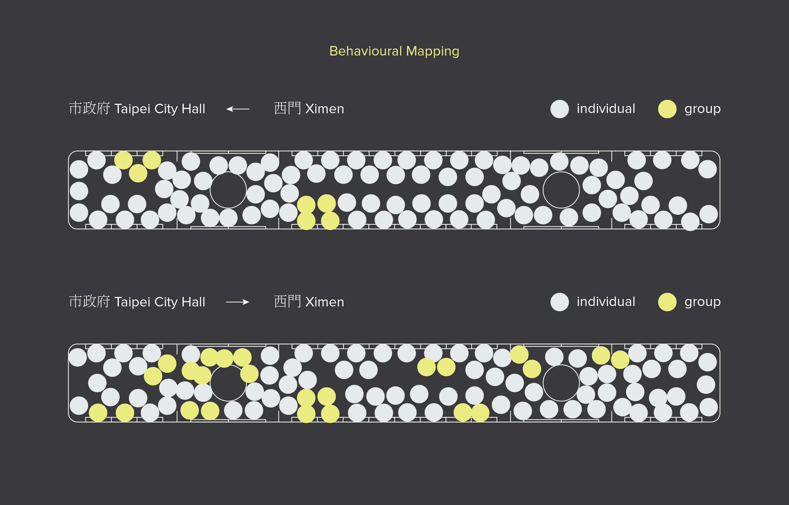
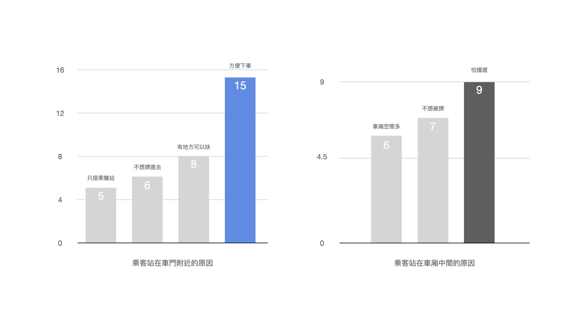
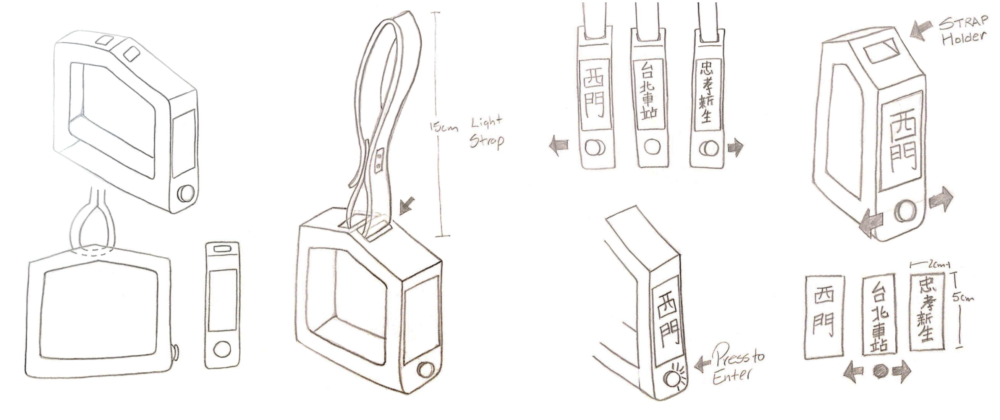
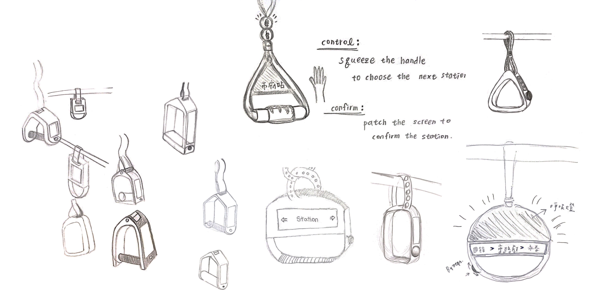
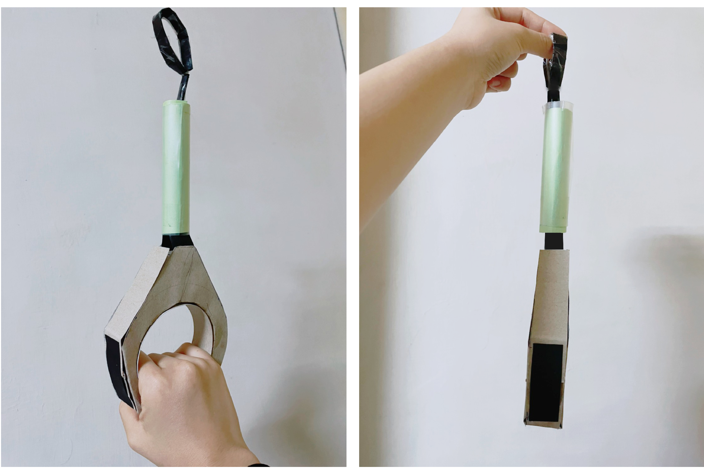
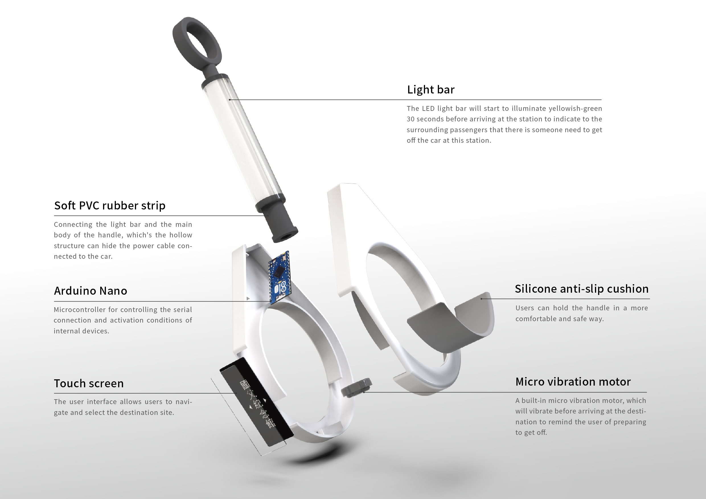
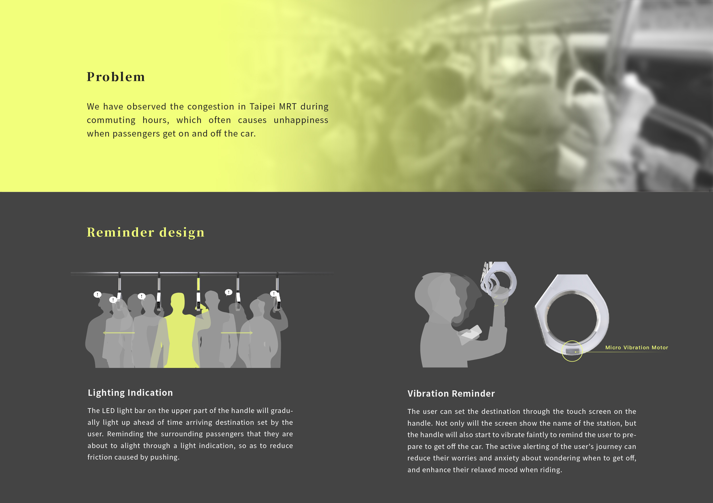

Courtesy
2021-User Experience design
Role
UX Research
UX Design
Prototyping
Tool/Method
Keyshot
Behavioural mapping
Timeline
2021 October
Overview
在尖峰時段搭乘雙北捷運時總是摩肩擦踵，上下車往往亦需要說幾聲借過才能順利通行。禮，是一款具備互動功能的車廂拉環。乘客可以在拉環上設定目的地，而在即將到站時，握把會震動以提醒使用拉環的乘客下車，與此同時，拉環上的燈光也能提醒附近周圍的人禮讓要下車的乘客。藉由燈光的引導，讓乘客間發揮禮讓借道的精神，彼此都能順利下車，減少推擠摩擦，又以無聲的互動方式，免去了陌生人間的不好意思，在通勤的生活中是一項直覺並飽含善意的設計作品。
Understanding the Problem
台灣的大眾交通工具串連了各個縣市與地區，其中，捷運的穩定度與便利性，使其成為了台灣大眾運輸中重要的角色之一，對許多族群而言，例如上班族以及學生，捷運已是不可或缺的日常通勤工具。然而現今民眾在搭乘捷運時，仍舊有值得改善的問題。在觀察捷運站內以及捷運車廂中的人流後，本研究將重點鎖定於乘客之間的互動行為，發現在每一天的尖峰時段，捷運車廂門口經常擁擠不堪。而造成此現象的主因是尖峰時段人潮眾多卻未妥善分流。因此我們進一步研究了車廂內部人群的行為模式，並針對此關鍵問題提出解決方案，以提升捷運人流秩序與人們的搭乘體驗。
Preliminary research
1. 行為地圖法（Behavioural mapping）
行為地圖是記錄人類在特定地點之行為活動的研究方法，利用平面圖、錄影或縮時攝影，系統性的將行為記錄下來。本研究使用360度相機在捷運車廂中拍攝環景實況，紀錄早晚不同時段的情形，並於影像錄製後分析整理觀察到的現象。根據統整的結果，本研究整理出以下重點。首先，進入車廂後，多數人會停留在門口，即使還有很多站才下車，也不會往車廂裡面移動。此外，人們抓住車廂中間的柱子後，除非被推擠，否則通常不會再往其他地方移動，因為人們比較偏好扶握穩固的地方。從360度的影像中可以看到乘客比較喜歡抓柱子或倚靠在門板上，而比較不願意使用拉環，然而，時常有人將整個身體靠在一進門的柱子上，使其他乘客無法扶握。另外，即將要下車的乘客會在列車行進時先擠到門口，忽略前面的其他人是否也即將要下車。在統整出以上重點後，本研究將人流記錄成平面圖，以更加清楚的方式，將所收集到的初始資料視覺化。
2. 問卷調查
接著我們針對時常搭乘捷運的乘客進行問卷調查，除了收集量化的資料，也透過質性資料獲取個人化的建議。經收回的問卷結果，我們將搭乘捷運的族群以站立的區域初步分為兩類，分別為「習慣站在車門附近」和「習慣站在車廂中間」。問卷資料顯示，習慣站在車門附近最主要的原因是方便下車，而習慣站在車廂中間的乘客，多數是因為擔心阻擋到下車乘客的移動路線、不想被推擠，以及想要擁有更寬敞的空間。資料製作成圖表後，就有了清晰明確的潛在原因可以去探索，並支撐後續的設計。
透過以上的前期研究我們將設計目標定義為：
“ 我們如何能透過優化車廂本體內部的設計來引導使用者往車廂內部移動，並讓在車廂內部的乘客更方便上下車 ”
Solution and Prototype Design
Brainstorming
透過問卷資料，我們將主設計聚焦在「方便下車」以及「有地方扶握」這兩項主要需求。接著我們透過Brainstorming的方式，發想車廂中還能增進哪些設計。我們意識到拉環是車廂內部主要的扶握裝置，因此本研究利用拉環作為主要設計發想的切入點，加入適當的互動設計來調整車廂內的人流，同時提高乘客使用拉環的意願以保持安全。
另外經過文獻探討，適當的光源能夠在不對乘客造成太大影響的前提下達到引導提示的作用，因此我們選定光源來作為引導媒介。在正常的日光條件下，人類眼睛能看見的光線波長落在380至800奈米之間，其中人眼最為敏感的光線波長則是550奈米，從光譜發光效能函數圖中來看，也就是黃綠色的燈光，因此我們選用此波段的黃綠色光，將其特色運用在而後的設計當中。
我們希望設計一項裝置，不僅可以吸引乘客使用拉環並往車廂內部移動、重新引導人流，還能方便乘客上下車。本研究最終設計了一款能夠設定目的地，並具有下車提醒功能的拉環，命名為「禮」。禮，是以禮相待，對人表示敬意的意思。取名為「禮」，是希望人們透過這個設計，可以減少彼此間因推擠產生的不愉快，達到人與人之間的禮讓美德，帶來舒適的氛圍與互動。

Design Concept
我們藉由Brainstorming的方式，畫出各式可能的手拉環樣貌，以及發想使用者的使用情境。
Prototyping
我們首先透過1:1的紙模型來找出最佳的握環尺寸。產品的整體設計主要由握把和管狀LED燈條兩個主要部分所組成，其中握把又包含了握把本體、觸控螢幕以及微型震動裝置。乘客可利用觸控螢幕選擇欲下車的站名，完成設定後，在即將到達目的地時，握把上方的LED燈條會亮起黃綠色的燈光，示意周圍的乘客禮讓即將下車的人，避免擋到出口。同時握把會發出震動回饋，提醒使用者準備下車。下車提醒這項功能參考了現有的公車下車鈴的概念，將提醒司機的方式轉換為提醒乘客，在乘客下車前給予充分的準備時間。

Final Design
最終設計的主要結構包含燈條、微控制器、電子觸控螢幕和微型震動馬達。技術上初步選擇Arduino系列中體積較小的Arduino Nano作為本設計的微控制器，負責傳輸站點資訊到電子觸控螢幕，提供使用者瀏覽，並於目的地抵達前，觸發LED燈條以及微型震動馬達，使燈條開始亮起燈光，同時讓握把開始震動，反饋給使用者。
本設計針對車廂內的安全輔助拉環進行重新設計，藉由燈光的引導，讓乘客間發揮禮讓借道的精神，彼此都能順利下車，減少推擠摩擦，又以無聲的互動方式，免去了陌生人間的不好意思，在通勤的生活中是一項直覺並飽含善意的設計作品。
Takeaways
1. 透過行為地圖法（Behavioural mapping）匯集大量觀察實錄，找出使用者行為的規律—利用360度攝影機觀察並記錄使用者在車廂內的行為，提供我們後續更方便分析，以找出設計痛點，尋找創新機會。
2. 設計思考並非線性、單方向的過程—在設計思考階段（包括概念發想、原型設計與測試）多次迭代與來回確認設計方向，是確保產品可行性的必要條件。